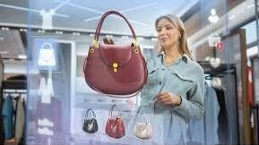

La réalité augmentée (RA) est une technologie qui superpose des éléments virtuels à l'environnement réel en temps réel, via smartphone, tablette ou lunettes connectées.
Contrairement à la réalité virtuelle, elle enrichit le monde réel sans le remplacer.

La RA permet de visualiser un produit avant achat, tester des vêtements ou accessoires virtuellement, et créer des vitrines interactives.
La réalité augmentée est un atout pour l’innovation commerciale et permet aux développeurs d’explorer des applications modernes et interactives.